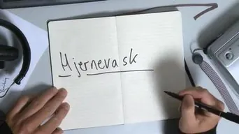

The genetics
The series is about the nature-versus-nurture debate, and heredity is one of its central topics. Several episodes ask how much of a trait is inherited: intelligence and parental influence, with the behavioural geneticist Robert Plomin; sexual orientation; personality; and, most controversially, genetic differences between human populations, discussed with researchers including Gregory Cochran, Charles Murray, Richard Lynn and Richard Nisbett. Scientists are presented largely as the voice of evidence against what the series portrays as ideological resistance in Norwegian gender studies, and the series earned Eia the Fritt Ord Award for sparking debate on research. The public debate that followed centred on the dismissive comments of one gender researcher about this work. Heritability, a key concept in these discussions, measures the share of variation in a trait within a population that is attributable to genetic differences, not how far an individual's trait is fixed by genes. Genetics here is the subject of argument rather than fiction.
The story
Hjernevask ("Brainwash") is a seven-part Norwegian documentary series presented by the comedian and sociologist Harald Eia and broadcast on NRK1 in 2010. Inspired by Steven Pinker's book The Blank Slate, each episode takes a question about human behaviour and contrasts the views of Norwegian social scientists and gender researchers, who stress culture and upbringing, with those of international researchers who argue for an interaction between biology and environment. The episodes cover why men and women choose different professions, how much influence parents have and whether intelligence is inherited, sexual orientation, violence, sex, race and genetic differences between populations, and whether personality is innate or acquired. Interviewees include Simon Baron-Cohen, Steven Pinker, Robert Plomin, Judith Rich Harris, David Buss and Simon LeVay. The series set off a heated public debate in Norway about gender research.